8 Non-sequential Pipelines and Tuning
Martin Binder
Ludwig-Maximilians-Universität München, and Munich Center for Machine Learning (MCML)
Florian Pfisterer
Ludwig-Maximilians-Universität München
Marc Becker
Ludwig-Maximilians-Universität München, and Munich Center for Machine Learning (MCML)
Marvin N. Wright
Leibniz Institute for Prevention Research and Epidemiology – BIPS, and University of Bremen, and University of Copenhagen
In Chapter 7 we looked at simple sequential pipelines that can be built using the Graph class and a few PipeOp objects. In this chapter, we will take this further and look at non-sequential pipelines that can perform more complex operations. We will then look at tuning pipelines by combining methods in mlr3tuning and mlr3pipelines and will consider some concrete examples using multi-fidelity tuning (Section 5.3) and feature selection (Chapter 6).
We saw the power of the %>>%-operator in Chapter 7 to assemble graphs from combinations of multiple PipeOps and Learners. Given a single PipeOp or Learner, the %>>%-operator will arrange these objects into a linear Graph with each PipeOp acting in sequence. However, by using the gunion() function, we can instead combine multiple PipeOps, Graphs, or a mixture of both, into a parallel Graph.
In the following example, we create a Graph that centers its inputs (po("scale")) and then copies the centered data to two parallel streams: one replaces the data with columns that indicate whether data is missing (po("missind")), and the other imputes missing data using the median (po("imputemedian")), which we will return to in Section 9.3. The outputs of both streams are then combined into a single dataset using po("featureunion").
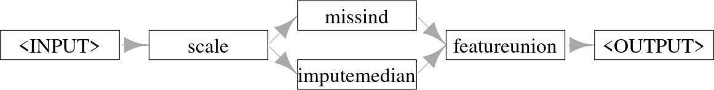
-> scale", then "scale" has two arrows to "missind" and "imputemedian" which both have an arrow to "featureunion ->PipeOps in parallel whose outputs are combined and returned to the user.
When applied to the first three rows of the "pima" task we can see how this imputes missing data and adds a column indicating where values were missing.
tsk_pima_head = tsk("pima")$filter(1:3)
tsk_pima_head$data(cols = c("diabetes", "insulin", "triceps")) diabetes insulin triceps
1: pos NA 35
2: neg NA 29
3: pos NA NAresult = graph$train(tsk_pima_head)[[1]]
result$data(cols = c("diabetes", "insulin", "missing_insulin", "triceps",
"missing_triceps")) diabetes insulin missing_insulin triceps missing_triceps
1: pos 0 missing 3 present
2: neg 0 missing -3 present
3: pos 0 missing 0 missing8.1 Selectors and Parallel Pipelines
It is common in Graphs for an operation to be applied to a subset of features. In mlr3pipelines this can be achieved in two ways (Figure 8.2): either by passing the column subset to the affect_columns hyperparameter of a PipeOp (assuming it has that hyperparameter), which controls which columns should be affected by the PipeOp; or, one can use the PipeOpSelect operator to create operations in parallel on specified feature subsets, and then unite the result using PipeOpFeatureUnion.
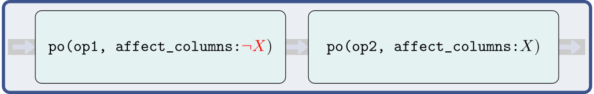
po(op2, affected_columns: X"). Bottom plot shows the parallel pipeline that starts with an arrow splitting and then pointing to both po("select", ¬X) and po("select", X). These respectively point to po(op1) and po(op2), which then both point to the same po("featureunion").">affect_columns hyperparameter can be used to restrict operations to a subset of features. When used, pipelines may still be run in sequence.
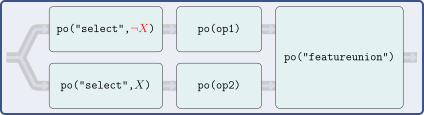
po(op2, affected_columns: X"). Bottom plot shows the parallel pipeline that starts with an arrow splitting and then pointing to both po("select", ¬X) and po("select", X). These respectively point to po(op1) and po(op2), which then both point to the same po("featureunion").">po("select") and then combining outputs with po("featureunion").
PipeOps (po(op1) and po(op2)) that operate on complementary features (X and ¬X) of an input task.
Both methods make use of Selector-functions. These are helper functions that indicate to a PipeOp which features it should apply to. Selectors may match column names by regular expressions (selector_grep()), or by column type (selector_type()). Selectors can also be used to join variables (selector_union()), return their set difference (selector_setdiff()), or select the complement of features from another Selector (selector_invert()).
SelectorFor example, in Section 7.1 we applied PCA to the bill length and depth of penguins from tsk("penguins_simple") by first selecting these columns using the Task method $select() and then applying the PipeOp. We can now do this more simply with selector_grep, and could go on to use selector_invert to apply some other PipeOp to other features, below we use po("scale") and make use of the affect_columns hyperparameter:
sel_bill = selector_grep("^bill")
sel_not_bill = selector_invert(sel_bill)
graph = po("scale", affect_columns = sel_not_bill) %>>%
po("pca", affect_columns = sel_bill)
result = graph$train(tsk("penguins_simple"))
result[[1]]$data()[1:3, 1:5] species PC1 PC2 body_mass flipper_length
1: Adelie -5.015 1.0717 -0.5676 -1.4246
2: Adelie -4.495 -0.1853 -0.5055 -1.0679
3: Adelie -3.755 0.4868 -1.1886 -0.4257The biggest advantage of this method is that it creates a very simple, sequential Graph. However, one disadvantage of the affect_columns method is that it is relatively easy to have unexpected results if the ordering of PipeOps is mixed up. For example, if we had reversed the order of po("pca") and po("scale") above then we would have first created columns "PC1" and "PC2" and then erroneously scaled these, since their names do not start with “bill” and they are therefore matched by sel_not_bill. Creating parallel paths with po("select") can help mitigate such errors by selecting features given by the Selector and creating independent data processing streams with the given feature subset. Below we pass the parallel pipelines to gunion() as a list to ensure they receive the same input, and then combine the outputs with po("featureunion").
po_select_bill = po("select", id = "s_bill", selector = sel_bill)
po_select_not_bill = po("select", id = "s_notbill",
selector = sel_not_bill)
path_pca = po_select_bill %>>% po("pca")
path_scale = po_select_not_bill %>>% po("scale")
graph = gunion(list(path_pca, path_scale)) %>>% po("featureunion")
graph$plot(horizontal = TRUE)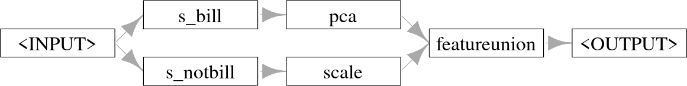
" which points to "s_bill -> pca" and "s_notbill" -> scale", then both "pca" and "scale" point to "featureunion ->Graph where features are split into two paths, one with PCA and one with scaling, then combined and returned.
The po("select") method also has the significant advantage that it allows the same set of features to be used in multiple operations simultaneously, or to both transform features and keep their untransformed versions (by using po("nop") in one path). PipeOpNOP performs no operation on its inputs and is thus useful when you only want to perform a transformation on a subset of features and leave the others untouched:
Graph where features are split into two paths, features that start with ‘bill’ are scaled and the rest are untransformed.
graph$train(tsk("penguins_simple"))[[1]]$data()[1:3, 1:5] species bill_depth bill_length body_mass flipper_length
1: Adelie 0.7796 -0.8947 3750 181
2: Adelie 0.1194 -0.8216 3800 186
3: Adelie 0.4241 -0.6753 3250 1958.2 Common Patterns and ppl()
Now you have the tools to create sequential and non-sequential pipelines, you can create an infinite number of transformations on Task, Learner, and Prediction objects. In Section 8.3.1 and Section 8.3.2 we will work through two examples to demonstrate how you can make complex and powerful graphs using the methods and classes we have already looked at. However, many common problems in ML can be well solved by the same pipelines, and so to make your life easier we have implemented and saved these pipelines in the mlr_graphs dictionary; pipelines in the dictionary can be accessed with the ppl() sugar function.
At the time of writing, this dictionary includes seven Graphs (required arguments included below):
-
ppl("bagging", graph): Inmlr3pipelines, bagging is the process of running agraphmultiple times on different data samples and then averaging the results. This is discussed in detail in Section 8.3.1. -
ppl("branch", graphs): UsesPipeOpBranchto create different path branches from the givengraphswhere only one branch is evaluated. This is returned to in more detail in Section 8.4.2. -
ppl("greplicate", graph, n): Create aGraphthat replicatesgraph(which can also be a singlePipeOp)ntimes. The pipeline avoids ID clashes by adding a suffix to eachPipeOp, we will see this pipeline in use in Section 8.3.1. -
ppl("ovr", graph): One-versus-rest classification for converting multiclass classification tasks into several binary classification tasks with one task for each class in the original. These tasks are then evaluated by the givengraph, which should be a learner (or a pipeline containing a learner that emits a prediction). The predictions made on the binary tasks are combined into the multiclass prediction needed for the original task. -
ppl("robustify"): Performs common preprocessing steps to make anyTaskcompatible with a givenLearner. This pipeline is demonstrated in Section 9.4. -
ppl("stacking", base_learners, super_learner): Stacking, returned to in detail in Section 8.3.2, is the process of using predictions from one or more models (base_learners) as features in a subsequent model (super_learner) -
ppl("targettrafo", graph): Create aGraphthat transforms the prediction target of a task and ensures that any transformations applied during training (using the function passed to thetargetmutate.trafohyperparameter) are inverted in the resulting predictions (using the function passed to thetargetmutate.inverterhyperparameter); an example is given in Section 9.5.
8.3 Practical Pipelines by Example
In this section, we will put pipelines into practice by demonstrating how to turn weak learners into powerful machine learning models using bagging and stacking.
8.3.1 Bagging with “greplicate” and “subsample”
The basic idea of bagging (from bootstrapp aggregating), introduced by Breiman (1996), is to aggregate multiple predictors into a single, more powerful predictor (Figure 8.5). Predictions are usually aggregated by the arithmetic mean for regression tasks or majority vote for classification. The underlying intuition behind bagging is that averaging a set of unstable and diverse (i.e., only weakly correlated) predictors can reduce the variance of the overall prediction. Each learner is trained on a different random sample of the original data.
Although we have already seen that a pre-constructed bagging pipeline is available with ppl("bagging"), in this section we will build our own pipeline from scratch to showcase how to construct a complex Graph, which will look something like Figure 8.5.
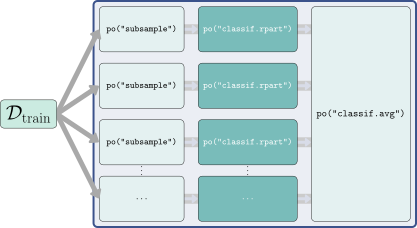
PipeOp.
To begin, we use po("subsample") to sample a fraction of the data (here 70%), which is then passed to a classification tree (note by default po("subsample") samples without replacement).
Next, we use ppl("greplicate") to copy the graph, gr_single_pred, 10 times (n = 10) and finally po("classifavg") to take the majority vote of all predictions, note that we pass innum = 10 to "classifavg" to tell the PipeOp to expect 10 inputs.
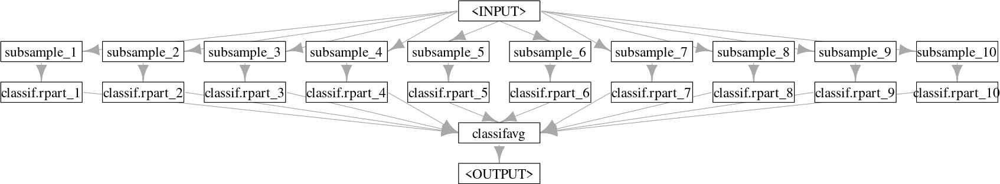
" pointing to ten PipeOps "subsample_1",...,"subsample_10" that each separately point to "classif.rpart_1",...,"classif.rpart_10" respectively, which all point to the same "classifavg ->Graph with one input being sampled many times for 10 different learners.
Now let us see how well our bagging pipeline compares to the single decision tree and a random forest when benchmarked against tsk("sonar").
# turn graph into learner
glrn_bagging = as_learner(gr_bagging)
glrn_bagging$id = "bagging"
lrn_rpart = lrn("classif.rpart")
learners = c(glrn_bagging, lrn_rpart, lrn("classif.ranger"))
bmr = benchmark(benchmark_grid(tsk("sonar"), learners,
rsmp("cv", folds = 3)))
bmr$aggregate()[, .(learner_id, classif.ce)] learner_id classif.ce
1: bagging 0.2498
2: classif.rpart 0.2739
3: classif.ranger 0.1973The bagged learner performs better than the decision tree but worse than the random forest. To automatically recreate this pipeline, you can construct ppl("bagging") by specifying the learner to ‘bag’, the number of iterations, the fraction of data to sample, and the PipeOp to average the predictions, as shown in the code below. Note we set collect_multiplicity = TRUE which collects the predictions across paths, that technically use the Multiplicity method, which we will not discuss here but refer the reader to the documentation.
The main difference between our pipeline and a random forest is that the latter also performs feature subsampling, where only a random subset of available features is considered at each split point. While we cannot implement this directly with mlr3pipelines, we can use a custom Selector method to approximate this method. We will create this Selector by passing a function that takes as input the task and returns a sample of the features, we sample the square root of the number of features to mimic the implementation in ranger. For efficiency, we will now use ppl("bagging") to recreate the steps above:
# custom selector
selector_subsample = function(task) {
sample(task$feature_names, sqrt(length(task$feature_names)))
}
# bagging pipeline with our selector
gr_bagging_quasi_rf = ppl("bagging",
graph = po("select", selector = selector_subsample) %>>%
lrn("classif.rpart", minsplit = 1),
iterations = 100,
averager = po("classifavg", collect_multiplicity = TRUE)
)
# bootstrap resampling
gr_bagging_quasi_rf$param_set$values$subsample.replace = TRUE
# convert to learner
glrn_quasi_rf = as_learner(gr_bagging_quasi_rf)
glrn_quasi_rf$id = "quasi.rf"
# benchmark
design = benchmark_grid(tsks("sonar"),
c(glrn_quasi_rf, lrn("classif.ranger", num.trees = 100)),
rsmp("cv", folds = 5)
)
bmr = benchmark(design)
bmr$aggregate()[, .(learner_id, classif.ce)] learner_id classif.ce
1: quasi.rf 0.1826
2: classif.ranger 0.1590In only a few lines of code, we took a weaker learner and turned it into a powerful model that we can see is comparable to the implementation in ranger::ranger. In the next section, we will look at a second example, which makes use of cross-validation within pipelines.
8.3.2 Stacking with po(“learner_cv”)
Stacking (Wolpert 1992) is another very popular ensembling technique that can significantly improve predictive performance. The basic idea behind stacking is to use predictions from multiple models (usually referred to as level 0 models) as features for a subsequent model (the level 1 model) which in turn combines these predictions (Figure 8.7). A simple combination can be a linear model (possibly regularized if you have many level 0 models), since a weighted sum of level 0 models is often plausible and good enough. Though, non-linear level 1 models can also be used, and it is also possible for the level 1 model to access the input features as well as the level 0 predictions. Stacking can be built with more than two levels (both conceptually, and in mlr3) but we limit ourselves to this simpler setup here, which often also performs well in practice.
As with bagging, we will demonstrate how to create a stacking pipeline manually, although a pre-constructed pipeline is available with ppl("stacking").
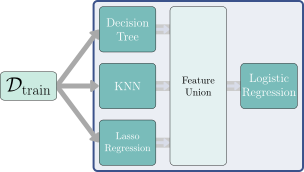
Logistic Regression".">PipeOpFeatureUnion.
Stacking pipelines depend on the level 0 learners returning predictions during the $train() phase. This is possible in mlr3pipelines with PipeOpLearnerCV. During training, this operator performs cross-validation and passes the out-of-sample predictions to the level 1 model. Using cross-validated predictions is recommended to reduce the risk of overfitting.
We first create the level 0 learners to produce the predictions that will be used as features. In this example, we use a classification tree, k-nearest neighbors (KNN), and a regularized GLM. Each learner is wrapped in po("learner_cv") which performs cross-validation on the input data and then outputs the predictions from the Learner in a new Task object.
lrn_rpart = lrn("classif.rpart", predict_type = "prob")
po_rpart_cv = po("learner_cv", learner = lrn_rpart,
resampling.folds = 2, id = "rpart_cv"
)
lrn_knn = lrn("classif.kknn", predict_type = "prob")
po_knn_cv = po("learner_cv",
learner = lrn_knn,
resampling.folds = 2, id = "knn_cv"
)
lrn_glmnet = lrn("classif.glmnet", predict_type = "prob")
po_glmnet_cv = po("learner_cv",
learner = lrn_glmnet,
resampling.folds = 2, id = "glmnet_cv"
)These learners are combined using gunion(), and po("featureunion") is used to merge their predictions. This is demonstrated in the output of $train():
gr_level_0 = gunion(list(po_rpart_cv, po_knn_cv, po_glmnet_cv))
gr_combined = gr_level_0 %>>% po("featureunion")
gr_combined$train(tsk("sonar"))[[1]]$head() Class rpart_cv.prob.M rpart_cv.prob.R knn_cv.prob.M knn_cv.prob.R
1: R 0.57895 0.4211 0.3857 0.6143
2: R 0.88636 0.1136 0.3170 0.6830
3: R 0.04348 0.9565 0.4396 0.5604
4: R 0.03030 0.9697 0.4762 0.5238
5: R 0.04348 0.9565 0.4753 0.5247
6: R 0.23077 0.7692 0.4020 0.5980
2 variable(s) not shown: [glmnet_cv.prob.M, glmnet_cv.prob.R]In this example, the original features were removed as each PipeOp only returns the predictions made by the respective learners. To retain the original features, include po("nop") in the list passed to gunion().
The resulting task contains the predicted probabilities for both classes made from each of the level 0 learners. However, as the probabilities always add up to \(1\), we only need the predictions for one of the classes (as this is a binary classification task), so we can use po("select") to only keep predictions for one class (we choose "M" in this example).
gr_stack = gr_combined %>>%
po("select", selector = selector_grep("\\.M$"))Finally, we can combine our pipeline with the final model that will take these predictions as its input. Below we use logistic regression, which combines the level 0 predictions in a weighted linear sum.
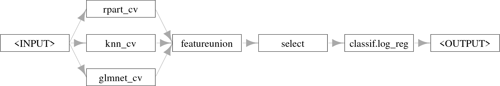
" in the first box with arrows to three boxes: "rpart_cv", "knn_cv", "glmnet_cv", which all have arrows pointing to the same boxes: "featureunion -> select -> classif.log_reg ->As our final model was an interpretable logistic regression, we can inspect the weights of the level 0 learners by looking at the final trained model:
glrn_stack = as_learner(gr_stack)
glrn_stack$train(tsk("sonar"))
glrn_stack$base_learner()$model
Call: stats::glm(formula = task$formula(), family = "binomial", data = data,
model = FALSE)
Coefficients:
(Intercept) rpart_cv.prob.M knn_cv.prob.M glmnet_cv.prob.M
-3.120 -0.134 4.040 1.804
Degrees of Freedom: 207 Total (i.e. Null); 204 Residual
Null Deviance: 287
Residual Deviance: 176 AIC: 184The model weights suggest that knn influences the predictions the most with the largest coefficient. To confirm this we can benchmark the individual models alongside the stacking pipeline.
glrn_stack$id = "stacking"
design = benchmark_grid(tsk("sonar"),
list(lrn_rpart, lrn_knn, lrn_glmnet, glrn_stack), rsmp("repeated_cv"))
bmr = benchmark(design)
bmr$aggregate()[, .(learner_id, classif.ce)] learner_id classif.ce
1: classif.rpart 0.2876
2: classif.kknn 0.1505
3: classif.glmnet 0.2559
4: stacking 0.1438This experiment confirms that of the individual models, the KNN learner performs the best, however, our stacking pipeline outperforms them all. Now that we have seen the inner workings of this pipeline, next time you might want to more efficiently create it using ppl("stacking"), to copy the example above you would run:
Having covered the building blocks of mlr3pipelines and seen these in practice, we will now turn to more advanced functionality, combining pipelines with tuning.
8.4 Tuning Graphs
By wrapping a pipeline inside a GraphLearner, we can tune it at two levels of complexity using mlr3tuning:
Tuning of a fixed, usually sequential pipeline, where preprocessing is combined with a given learner. This simply means the joint tuning of any subset of selected hyperparameters of operations in the pipeline. Conceptually and also technically in
mlr3, this is not much different from tuning a learner that is not part of a pipeline.Tuning not only the hyperparameters of a pipeline, whose structure is not completely fixed in terms of its included operations, but also which concrete
PipeOps should be applied to data. This allows us to select these operations (e.g. which learner to use, which preprocessing to perform) in a data-driven manner known as “Combined Algorithm Selection and Hyperparameter optimization” (Thornton et al. 2013). As we will soon see, we can do this inmlr3pipelinesby using the powerful branching (Section 8.4.2) and proxy (Section 8.4.3) meta operators. Through this, we can conveniently create our own “mini AutoML systems” (Hutter, Kotthoff, and Vanschoren 2019) inmlr3, which can even be geared for specific tasks.
8.4.1 Tuning Graph Hyperparameters
Let us consider a simple, sequential pipeline using po("pca") followed by lrn("classif.kknn"):
The optimal setting of the rank. hyperparameter of our PCA PipeOp may realistically depend on the value of the k hyperparameter of the KNN model so jointly tuning them is reasonable. For this, we can simply use the syntax for tuning Learners, which was introduced in Chapter 4.
lrn_knn = lrn("classif.kknn", k = to_tune(1, 32))
po_pca = po("pca", rank. = to_tune(2, 20))
graph_learner = as_learner(po_pca %>>% lrn_knn)
graph_learner$param_set$values$pca.rank.
Tuning over:
range [2, 20]
$classif.kknn.k
Tuning over:
range [1, 32]We can see how the pipeline’s $param_set includes the tune tokens for all selected hyperparameters, creating a joint search space. We can compare the tuned and untuned pipeline in a benchmark experiment with nested resampling by using an AutoTuner:
glrn_tuned = auto_tuner(tnr("random_search"), graph_learner,
rsmp("holdout"), term_evals = 10)
glrn_untuned = po("pca") %>>% lrn("classif.kknn")
design = benchmark_grid(tsk("sonar"), c(glrn_tuned, glrn_untuned),
rsmp("cv", folds = 5))
benchmark(design)$aggregate()[, .(learner_id, classif.ce)] learner_id classif.ce
1: pca.classif.kknn.tuned 0.2028
2: pca.classif.kknn 0.2458Tuning pipelines will usually take longer than tuning individual learners as training steps are often more complex and the search space will be larger. Therefore, parallelization is often appropriate (Section 10.1) and/or more efficient tuning methods for searching large tuning spaces such as Bayesian optimization (Section 5.4).
8.4.2 Tuning Alternative Paths with po(“branch”)
In the previous section, we tuned the KKNN and decision tree in the stacking pipeline, as well as tuning the rank of the PCA. However, we tuned the PCA without first considering if it was even beneficial at all, in this section we will answer that question by making use of PipeOpBranch and PipeOpUnbranch, which make it possible to specify multiple alternative paths in a pipeline. po("branch") creates multiple paths such that data can only flow through one of these as determined by the selection hyperparameter (Figure 8.13). This concept makes it possible to use tuning to decide which PipeOps and Learners to include in the pipeline, while also allowing all options in every path to be tuned.
![Graph with "Dtrain" on the left with an arrow to `po("branch", selection = "pca")` which then has a dark shaded arrow to a box that says "PCA". Above this box is a transparent box that says "PipeOpNOP" and below the "PCA" box is another transparent box that says "YeoJohnson", the implication is that only the "PCA" box is active. The "PCA" box then has an arrow to `po("unbranch")` -> po("branch", selection = "XGBoost")` which has three arrows to another three boxes with "XGBoost" highlighted and "Random Forest" and "Decision Tree" transparent again. These finally have arrows to the same `po("unbranch")`.](Figures/mlr3book_figures-24.svg)
po("branch") and po("unbranch") operators where three separate branches are created and data only flows through the PCA, which is specified with the argument to selection.
To demonstrate alternative paths we will make use of the MNIST (LeCun et al. 1998) data, which is useful for demonstrating preprocessing. The data is loaded from OpenML, which is described in Section 11.1, we subset the data to make the example run faster.
po("branch") is initialized either with the number of branches or with a character-vector indicating the names of the branches, the latter makes the selection hyperparameter (discussed below) more readable. Below we create three branches: do nothing (po("nop")), apply PCA (po("pca")), remove constant features (po("removeconstants")) then apply the Yeo-Johnson transform (po("yeojohnson")). It is important to use po("unbranch") (with the same arguments as "branch") to ensure that the outputs are merged into one result object.
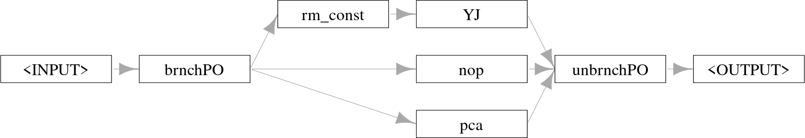
-> brnchPO" which has three arrows to "removeconstants -> yeojohnson", "nop", and "pca", which all then point to "unbrnchPO ->po("branch") and combined with po("unbranch").
We can see how the output of this Graph depends on the setting of the branch.selection hyperparameter:
# use the "PCA" path
graph$param_set$values$brnchPO.selection = "pca"
# new PCA columns
head(graph$train(tsk_mnist)[[1]]$feature_names)[1] "PC1" "PC2" "PC3" "PC4" "PC5" "PC6"# use the "No-Op" path
graph$param_set$values$brnchPO.selection = "nop"
# same features
head(graph$train(tsk_mnist)[[1]]$feature_names)[1] "pixel4" "pixel8" "pixel10" "pixel11" "pixel14" "pixel39"ppl("branch") simplifies the above by allowing you to just pass the different paths to the graphs argument (omitting “rm_const” for simplicity here):
Branching can even be used to tune which of several learners is most appropriate for a given dataset. We extend our example further and add the choice between a decision tree and KKNN:
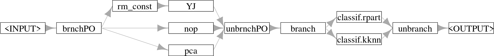
-> brnchPO" which has three arrows to "removeconstants -> yeojohnson", "nop", and "pca", which all then point to "unbrnchPO -> branch", which then has two arrows to "classif.rpart" and "classif.kknn" which then both point to "unbranch ->po("branch") and combined with po("unbranch") then branch and recombine again.
Tuning the selection hyperparameters can help determine which of the possible options work best in combination. We additionally tune the k hyperparameter of the KNN learner, as it may depend on the type of preprocessing performed. As this hyperparameter is only active when the "classif.kknn" path is chosen we will set a dependency (Section 4.4.4):
graph_learner = as_learner(graph_learner)
graph_learner$param_set$set_values(
brnchPO.selection = to_tune(paths),
branch.selection = to_tune(c("classif.rpart", "classif.kknn")),
classif.kknn.k = to_tune(p_int(1, 32,
depends = branch.selection == "classif.kknn"))
)
instance = tune(tnr("grid_search"), tsk_mnist, graph_learner,
rsmp("repeated_cv", folds = 3, repeats = 3), msr("classif.ce"))
instance$archive$data[order(classif.ce)[1:5],
.(brnchPO.selection, classif.kknn.k, branch.selection, classif.ce)] brnchPO.selection classif.kknn.k branch.selection classif.ce
1: yeojohnson 15 classif.kknn 0.2473
2: yeojohnson 11 classif.kknn 0.2477
3: yeojohnson 18 classif.kknn 0.2513
4: yeojohnson 22 classif.kknn 0.2530
5: yeojohnson 8 classif.kknn 0.2537autoplot(instance)![Three scatter plots all with y-axis 'classif.ce' from around 0.25 to 0.5. Left plot is 'brnchPO.selection', middle is 'classif.knn.k', right is 'branch.selection'. x-axis text is the hyperparameter values to tune. Each 'row' of the y-axis indicates a different hyperparameter configuration (also separated by colored dots). The bottom row (and therefore best configuration) is at around 0.22 and shows the same results as in the instance output. Other 'rows' show a trade-off between KKNN `k` parameter, choice of learner, and choice of operators.](non-sequential_pipelines_and_tuning_files/figure-html/fig-nonseq-instance-1.png)
brnchPO.selection), KNN k parameter (classif.kknn.k), and learning branch choice (branch.selection). Dots are different hyperparameter configurations that were tested during tuning, colors separate hyperparameter configurations.
As we can see in the results and Figure 8.12, the KNN-learner with k set to 15 was selected, which performs best in combination with the Yeo-Johnson transform.
8.4.3 Tuning with po(“proxy”)
po("proxy") is a meta-operator that performs the operation that is stored in its content hyperparameter, which could be another PipeOp or Graph. It can therefore be used to tune over and select different PipeOps or Graphs that could be passed to this hyperparameter (Figure 8.13).
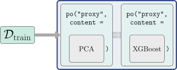
po("proxy", content = PCA) -> po("proxy", content = XGBoost)"; "PCA" and "XGBoost" are represented as boxes that imply PipeOps.">po("proxy") operator with a PipeOp as its argument.
To recreate the example above with po("proxy"), the first step is to create placeholder PipeOpProxy operators to stand in for the operations (i.e., different paths) that should be tuned.
The tuning space for the content hyperparameters should be a discrete set of possibilities to be evaluated, passed as a p_fct (Section 4.4.2). For the "preproc" proxy operator this would simply be the different PipeOps that we want to consider:
For the "learner" proxy, this is more complicated as the selection of the learner depends on more than one search space component: The choice of the learner itself (lrn("classif.rpart") or lrn("classif.kknn")) and the tuned k hyperparameter of the KNN learner. To enable this we pass a transformation to .extra_trafo (Section 4.4.3). Note that inside this transformation we clone learner.content, otherwise, we would end up modifying the original Learner object inside the search space by reference (Section 1.5.1).
# define content for the learner proxy operator
learner.content = p_fct(list(
classif.rpart = lrn("classif.rpart"),
classif.kknn = lrn("classif.kknn")
))
# define transformation to set the content values
trafo = function(x, param_set) {
if (!is.null(x$classif.kknn.k)) {
x$learner.content = x$learner.content$clone(deep = TRUE)
x$learner.content$param_set$values$k = x$classif.kknn.k
x$classif.kknn.k = NULL
}
x
}We can now put this all together, add the KNN tuning, and run the experiment.
search_space = ps(
preproc.content = preproc.content,
learner.content = learner.content,
# tune KKNN parameter as normal
classif.kknn.k = p_int(1, 32,
depends = learner.content == "classif.kknn"),
.extra_trafo = trafo
)
instance = tune(tnr("grid_search"), tsk_mnist, graph_learner,
rsmp("repeated_cv", folds = 3, repeats = 3), msr("classif.ce"),
search_space = search_space)
as.data.table(instance$result)[,
.(preproc.content,
classif.kknn.k = x_domain[[1]]$learner.content$param_set$values$k,
learner.content, classif.ce)
] preproc.content classif.kknn.k learner.content classif.ce
1: yeojohnson 8 classif.kknn 0.2447Once again, the best configuration is a KNN learner with the Yeo-Johnson transform. In practice po("proxy") offers complete flexibility and may be more useful for more complicated use cases, whereas ppl("branch") is more efficient in more straightforward scenarios.
8.4.4 Hyperband with Subsampling
In Section 5.3 we learned about the Hyperband tuner and how it can make use of fidelity parameters to efficiently tune learners. Now that you have learned about pipelines and how to tune them, in this short section we will briefly return to Hyperband to showcase how we can put together everything we have learned in this chapter to allow Hyperband to be used with any Learner.
We previously saw how some learners have hyperparameters that can act naturally as fidelity parameters, such as the number of trees in a random forest. However, using pipelines, we can now create a fidelity parameter for any model using po("subsample"). The frac parameter of po("subsample") controls the amount of data fed into the subsequent Learner. In general, feeding less data to a Learner results in quicker model training but poorer quality predictions compared to when more training data is supplied. Resampling with less data will still give us some information about the relative performance of different model configurations, thus making the fraction of data to subsample the perfect candidate for a fidelity parameter.
In this example, we will optimize the SVM hyperparameters, cost and gamma, on tsk("sonar"):
library(mlr3tuning)
learner = lrn("classif.svm", id = "svm", type = "C-classification",
kernel = "radial", cost = to_tune(1e-5, 1e5, logscale = TRUE),
gamma = to_tune(1e-5, 1e5, logscale = TRUE))We then construct po("subsample") and specify that we want to use the frac parameter between \([3^{-3}, 1]\) as our fidelity parameter and set the "budget" tag to pass this information to Hyperband. We add this to our SVM and create a GraphLearner.
graph_learner = as_learner(
po("subsample", frac = to_tune(p_dbl(3^-3, 1, tags = "budget"))) %>>%
learner
)As good practice, we encapsulate our learner and add a fallback to prevent fatal errors (Section 5.1).
Now we can tune our SVM by tuning our GraphLearner as normal, below we set eta = 3 for Hyperband.
instance = tune(tnr("hyperband", eta = 3), tsk("sonar"), graph_learner,
rsmp("cv", folds = 3), msr("classif.ce"))ERROR [12:18:29.536] [mlr3] train: Model is empty!
This happened PipeOp svm's $train()Warning in .__Codomain__maximization_to_minimization(self = self, private = private, : 'maximization_to_minimization' is deprecated.
Use 'direction' instead.
See help("Deprecated")
Warning in .__Codomain__maximization_to_minimization(self = self, private = private, : 'maximization_to_minimization' is deprecated.
Use 'direction' instead.
See help("Deprecated")
Warning in .__Codomain__maximization_to_minimization(self = self, private = private, : 'maximization_to_minimization' is deprecated.
Use 'direction' instead.
See help("Deprecated")instance$result_x_domain$subsample.frac
[1] 1
$svm.cost
[1] 5.435
$svm.gamma
[1] 0.0083188.4.5 Feature Selection with Filter Pipelines
In Section 6.1.4 we learnt about filter-based feature selection and how we can manually run a filter and then extract the selected features, often using an arbitrary choice of thresholds that were not tuned. Now that we have covered pipelines and tuning, we will briefly return to feature selection to demonstrate how to automate filter-based feature selection by making use of po("filter"). po("filter") includes the filter construction argument, which takes a Filter object to be used as the filter method as well as a choice of parameters for different methods of selecting features:
-
filter.nfeat– Number of features to select -
filter.frac– Fraction of features to select -
filter.cutoff– Minimum value of filter such that features with filter values greater than or equal to the cutoff are kept -
filter.permuted– Random permutation of features added to task before applying the filter and all features before thepermuted-th permuted features are kept
Below we use the information gain filter and select the top three features:
library(mlr3filters)
library(mlr3fselect)
task_pen = tsk("penguins")
# combine filter (keep top 3 features) with learner
po_flt = po("filter", filter = flt("information_gain"), filter.nfeat = 3)
graph = po_flt %>>% po("learner", lrn("classif.rpart"))
po("filter", filter = flt("information_gain"), filter.nfeat = 3)$
train(list(task_pen))[[1]]$feature_names[1] "bill_depth" "bill_length" "flipper_length"Choosing 3 as the cutoff was fairly arbitrary but by tuning a graph we can optimize this cutoff:
# tune between 1 and total number of features
po_filter = po("filter", filter = flt("information_gain"),
filter.nfeat = to_tune(1, task_pen$ncol))
graph = as_learner(po_filter %>>% po("learner", lrn("classif.rpart")))
instance = tune(tnr("random_search"), task_pen, graph,
rsmp("cv", folds = 3), term_evals = 10)
instance$result information_gain.filter.nfeat learner_param_vals x_domain classif.ce
1: 5 <list[2]> <list[1]> 0.0552In this example, 5 is the optimal number of features. It can be especially useful in feature selection to visualize the tuning results as there may be cases where the optimal result is only marginally better than a result with less features (which would lead to a model that is quicker to train and possibly easier to interpret).
autoplot(instance)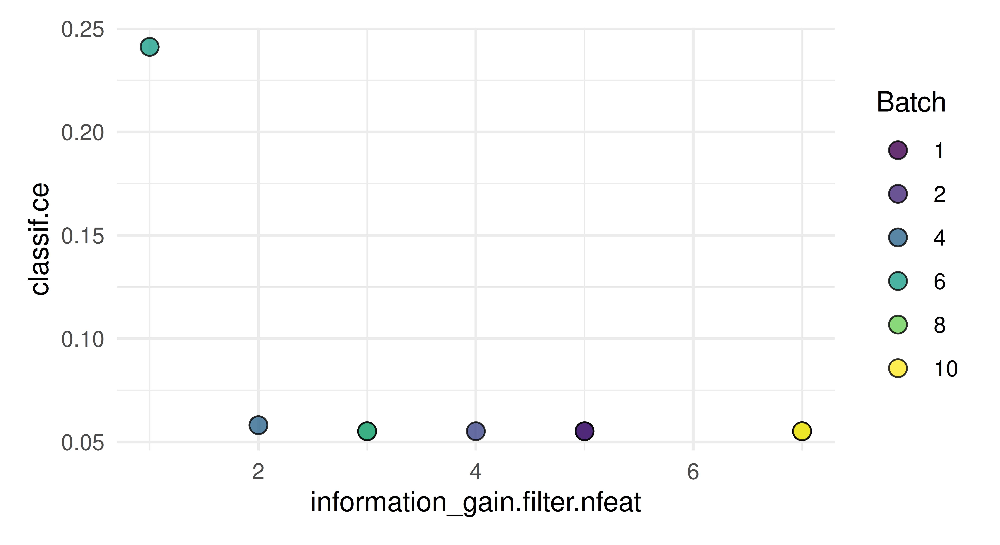
Now we can see that four variables may be equally as good in this case so we could consider going forward by selecting four features and not six as suggested by instance$result.
8.5 Conclusion
In this chapter, we built on what we learned in Chapter 7 to develop complex non-sequential Graphs. We saw how to build our own graphs, as well as how to make use of ppl() to load Graphs that are available in mlr3pipelines. We then looked at different ways to tune pipelines, including joint tuning of hyperparameters and tuning the selection of PipeOps in a Graph, enabling the construction of simple, custom AutoML systems. In Chapter 9 we will study in more detail how to use pipelines for data preprocessing.
| Class | Constructor/Function | Fields/Methods |
|---|---|---|
Graph |
ppl() |
$train(); $predict()
|
Selector |
selector_grep(); selector_type(); selector_invert()
|
- |
PipeOpBranch; PipeOpUnbranch
|
po("branch"); po("unbranch")
|
- |
PipeOpProxy |
po("proxy") |
- |
8.6 Exercises
- Create a graph that replaces all numeric columns that do not contain missing values with their PCA transform. Solve this in two ways, using
affect_columnsin a sequential graph, and usingpo("select")in a non-sequential graph. Train the graph ontsk("pima")to check your result. Hint: You may findselector_missing()useful. - The
po("select")in Section 8.3.2 is necessary to remove redundant predictions (recall this is a binary classification task so we do not require predictions of both classes). However, if this was a multiclass classification task, then usingselector_grep()would need to be called with a pattern for all prediction columns that should be kept, which would be inefficient. Instead it would be more appropriate to provide a pattern for the single class to remove. How would you do this using theSelectorfunctions provided bymlr3pipelines? Implement this and train the modified stacking pipeline ontsk("wine"), usinglrn("classif.multinom")as the level 1 learner. - How would you solve the previous exercise without explicitly naming the class you want to exclude, so that your graph works for any classification task? Hint: look at the
selector_subsamplein Section 8.3.1. - (*) Create your own “minimal AutoML system” by combining pipelines, branching and tuning. It should allow automatic preprocessing and the automatic selection of a well-performing learning algorithm. Both your
PipeOps and models should be tuned. Your system should feature options for two preprocessing steps (imputation and factor encoding) and at least three learning algorithms to choose from. You can optimize this via random search, or try to use a more advanced tuning algorithm. Test it on at least three different data sets and compare its performance against an untuned random forest via nested resampling.
8.7 Citation
Please cite this chapter as:
Binder M, Pfisterer F, Becker M, Wright MN. (2024). Non-sequential Pipelines and Tuning. In Bischl B, Sonabend R, Kotthoff L, Lang M, (Eds.), Applied Machine Learning Using mlr3 in R. CRC Press. https://mlr3book.mlr-org.com/non-sequential_pipelines_and_tuning.html.
@incollection{citekey,
author = "Martin Binder and Florian Pfisterer and Marc Becker and Marvin N. Wright",
title = "Non-sequential Pipelines and Tuning",
booktitle = "Applied Machine Learning Using {m}lr3 in {R}",
publisher = "CRC Press", year = "2024",
editor = "Bernd Bischl and Raphael Sonabend and Lars Kotthoff and Michel Lang",
url = "https://mlr3book.mlr-org.com/non-sequential_pipelines_and_tuning.html"
}